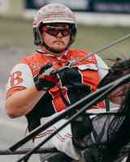

The trainer
Meet Scott
Harness racing runs deep in the Betts family. Scott's grandfather trained and drove Standardbreds, and his father was a veterinarian who worked on them, so he grew up around the sport.
Read Scott's storyHome of 2018 Meadows Horse of the Year Phoenix Warrior N. Standardbreds trained at The Meadows and raced at Northfield Park and beyond.
Meet the HorsesWatch ReplaysUpdated automatically every morning from TrackMaster race charts.
| Date | Horse | Track | Race | Finish | Time | Driver | |
|---|---|---|---|---|---|---|---|
| Nov 9, 2026 | Looks Like Moni | Northfield Park | 14 | 1st | 1:55.4 | Aaron E Merriman | Chart |
| Nov 9, 2026 | Redwhite N Goo | Northfield Park | 12 | 8th | 1:54.1 | Emanuel H Miller | Chart |
| Nov 8, 2026 | Ella Jo | Northfield Park | 14 | 6th | 1:54.3 | Anthony A Macdonald | Chart |
| Nov 4, 2026 | Punchin Preacher | The Meadows | 1 | 3rd | 1:55.0 | Case A Bateson | Chart |
| Nov 2, 2026 | Redwhite N Goo | Northfield Park | 12 | 7th | 1:55.0 | Emanuel H Miller | Chart |
| Nov 1, 2026 | Ella Jo | Northfield Park | 12 | 4th | 1:53.0 | Wyatt M Farmer | Chart |
| Oct 31, 2026 | Ready Set Goo | Shenandoah Downs | 4 | 4th | 2:00.4 | Scott R Betts | Chart |
| Oct 24, 2026 | Ready Set Goo | Shenandoah Downs | 7 | 1st | 2:00.4 | Scott R Betts | Chart |
Entries for the coming days.
| Date | Horse | Track | Race |
|---|---|---|---|
| Nov 11, 2026 | Punchin Preacher | The Meadows | 11 |
| Nov 13, 2026 | Three Way Action | The Meadows | 7 |

Harness racing runs deep in the Betts family. Scott's grandfather trained and drove Standardbreds, and his father was a veterinarian who worked on them, so he grew up around the sport.
Read Scott's storyInterested in owning a share of a racehorse, or sending us a horse to train?